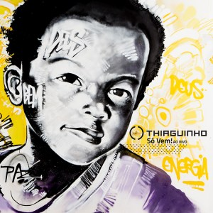

Tardizinha
Tardizinha
Nascido no interior de São Paulo e criado no Mato Grosso do Sul, Thiaguinho cresceu ouvindo música sertaneja, ritmo predominante na cidade onde morava. Mas as referências musicais da família também influenciaram o garoto de Presidente Prudente, que ouvia Elis Regina e Tim Maia.
Ainda menino cantava e tocava violão nos corais da igreja que frequentava com sua mãe. Conheceu o pagode através de um tio e, desde então, traçou uma meta: ser músico, ou melhor, pagodeiro.
Seu primeiro trabalho foi no Grupo Samba e Suor, mas foi no reality show “Fama”, da TV Globo, que o cantor foi revelado.
Determinado em seu propósito de ser um cantor de pagode ele seguiu em frente, até que um dia foi convidado para ser o vocalista do Grupo Exaltasamba. Com muito talento e carisma, Thiaguinho conquistou os fãs do Exaltasamba e agregou milhões de outros em todo o país, transformando o grupo no maior sucesso deste segmento no Brasil.
O menino que começou a compor para vencer a timidez é considerado um dos compositores mais requisitados do momento. Suas canções invariavelmente viram hits e são gravadas por artistas de todos os gêneros.
Após nove anos à frente do Exaltasamba, Thiaguinho decolou para uma nova e vitoriosa fase em sua carreira.
| Albúm | Ano |
|---|---|
|  Só vem | 2017 |
|
Tardizinha |
2017 |
| #vamoQvamo | 2016 |
| Hey, Mundo! | 2015 |